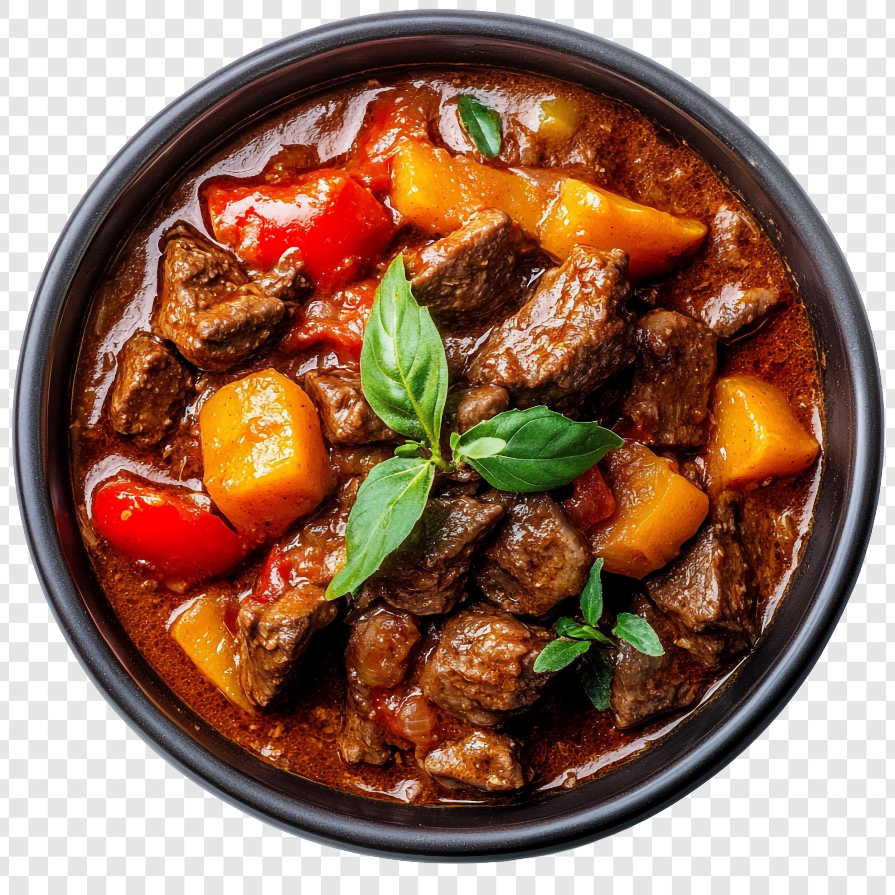

Receta de estofado de ternera

Descripcion
Esta receta esta pensada para compratir en familia y explorar nuevos
sabores.
es una receta que es muuy buen para el mundo del fitness por sus
propiedades.
Pasos:
- Carne para guisar (como morcillo o aguja)
- Verduras para el sofrito (Cebolla,ajo,zanahoria)
- Vino tinto para desglazar
- Caldo de carne
- Y opcionalmente patata.